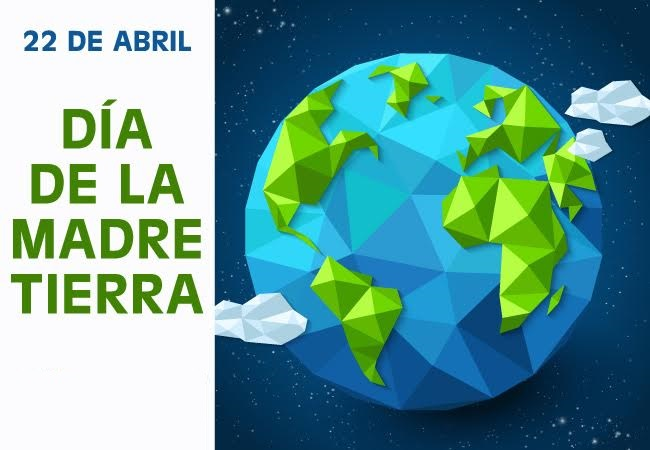
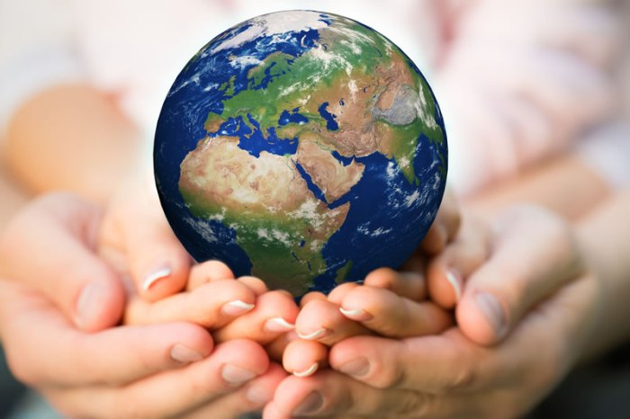
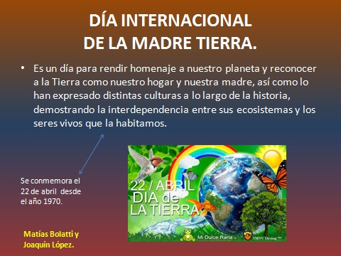
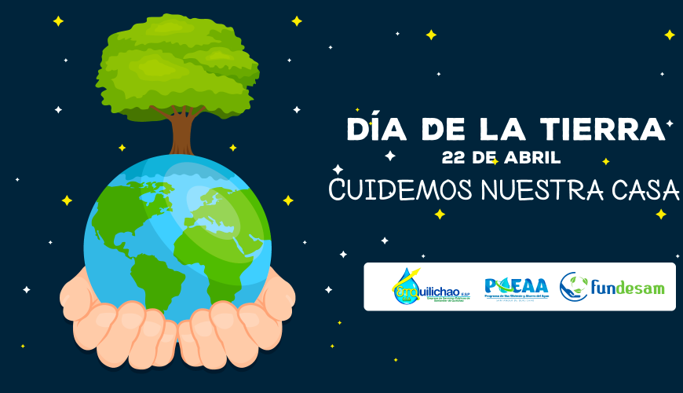
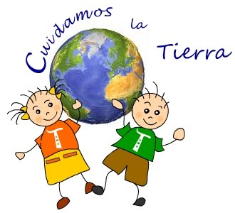

Dia Internacional de la Madre Tierra 22 de abril
- 

- 
- 


- 
Realizado por:
Maklein Damian Romero
4 "H"
Especialidad:
Programacion
Submodulo:
Desarrolla Aplicaciones Moviles
Docente:
Lic.Jose Antonio Gomez Hernandez
4 "H"
Programacion
Desarrolla Aplicaciones Moviles
Lic.Jose Antonio Gomez Hernandez
Celebramos el Dia Internacional de la madre tierra para recordar que el planeta y sus ecosistemas nos dan la vida y el sustento.Con este dia , asumimos, ademas la responsabilidad colectiva, como nos recordabala Declaracion de Rio de 1992, de fomentar esta armonia con la naturaleza y la Madre Tierra. Este dia nos brinda tambien la oportunidad de concienciar a todos los habitantes del planeta acerca de los problemas que afectan a la Tierra y a las diferentes formas de vida que en el que se desarrollan.

En 1968, Morton Hilbert y el U.S. Public Health Servicese realiza una conferencia por los nombrados anteriormente para una asamblea o conferencia medioambiental para que estudiantes escucharan a científicos hablar sobre los efectos del deterioro ambiental en la salud humana.2 Este fue el primer antecedente del Día de la Tierra.Durante los siguientes dos años, Hilbert y sus estudiantes trabajaron para planear el primer Día de la Tierra.
Madre Tierra.es una expresión común utilizada para referirse al Planeta Tierra en diversos países y regiones, lo que demuestra la interdependencia existente entre los seres humanos, las demás especies vivas y el planeta que todos habitamos.La Tierra y sus ecosistemas son nuestro hogar. Para alcanzar un justo equilibrio entre las necesidades económicas, sociales y ambientales de las generaciones presentes y futuras, es necesario promover la armonía con la naturaleza y el planeta.

Octavo Diálogo sobre Armonía con la Naturaleza La ONU informó que este año se celebrará el octavo Diálogo sobre armonía con la naturaleza, el día 23 de abril en la Sede de la ONU de Nueva York. Este diálogo interactivo es una buena plataforma para tratar temas como la producción sostenible y los patrones de consumo en la Armonía con la naturaleza. Asimismo, el diálogo quiere fomentar que los ciudadanos y las sociedades se conciencien sobre cómo se relacionan y cómo pueden relacionarse con el mundo natural; al mismo tiempo, pretende mejorar los cimientos éticos de la relación entre la humanidad y la Tierra, en términos de desarrollo sostenible.
La Asamblea General designa en su resolución A/RES/63/278 el 22 de abril como el Día Internacional de la Madre Tierra, teniendo en cuenta que en muchos países se celebra el día de la Tierra, y con el objetivo de alcanzar un justo equilibrio entre las necesidades económicas, las sociales y las ambientales de las generaciones presentes y futuras, y para promover la armonía con la naturaleza y la Tierra. Invita a todos los Estados Miembros, las organizaciones del sistema de las Naciones Unidas, las organizaciones internacionales, regionales y subregionales, la sociedad civil, las organizaciones no gubernamentales y las partes interesadas a observar el Día Internacional de la Madre Tierra y crear conciencia al respecto, según proceda. 